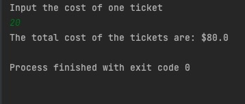

Java project
I have been working on java for a few years now. I have uploaded a project that I did in my first java class.
This is a program that will allow a user to calculate the cost of four people going to a Rush concert. The ticket price will be the same for all four of them because they will be sitting together in the same section.
A method will prompt the user for the cost of one ticket. If the user enters a value less than zero then an error message will be printed and the user will be prompted again to enter the cost of one ticket. This method will continue prompting for the cost of one ticket until the user enters a cost greater than or equal to zero.Finally a method will calculate the total cost of four tickets by multiplying the ticket cost by four. It should end by returning the total cost to the main method.
